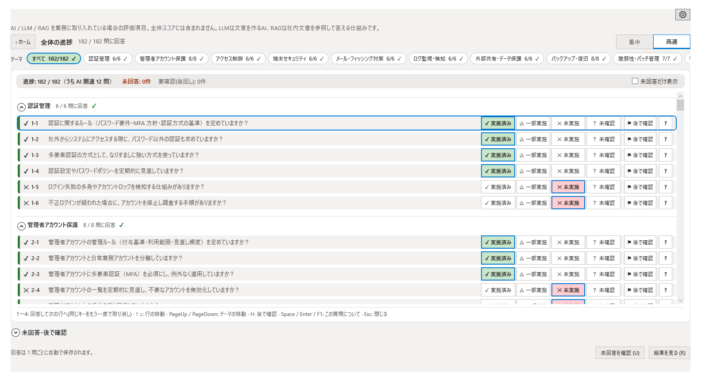
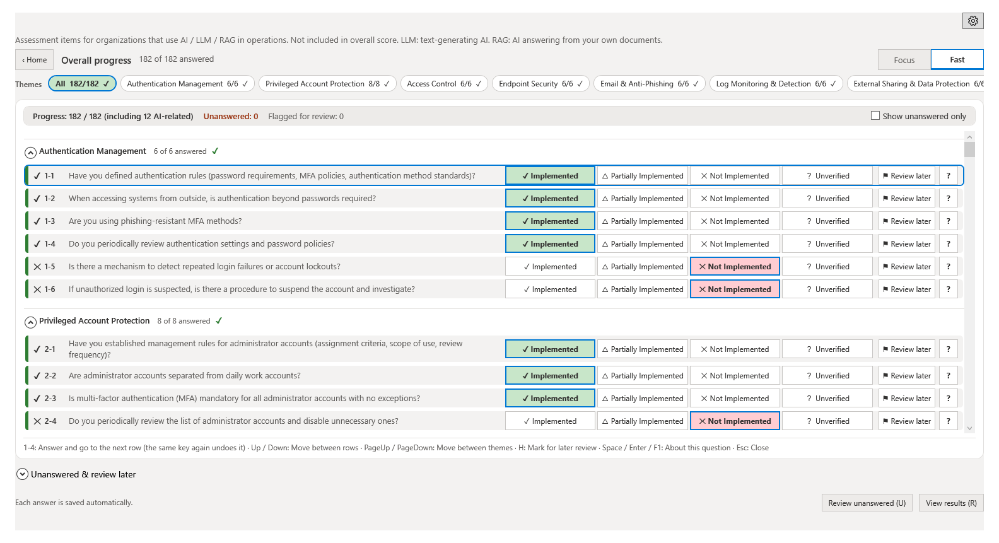

Chapter 3: 質問への回答
ホーム、集中・高速の回答画面、回答選択肢、ナビゲーション
ヒアリング画面の概要
ヒアリング画面に入ると、最初に「ホーム」が表示されます。ホームから、1 問ずつ回答する「集中」と、全テーマの質問を行で並べて続けて回答する「高速」のどちらかに進みます。「結果を見る」で結果画面に進めます。回答の途中でも暫定結果を確認できます。回答は 1 問ごとに自動で保存されます。
ホーム
ホームでは、全体の進捗と、次の操作が表示されます。
- 全体の進捗: 回答済みの数を確認できます。
- つづきから再開: 前回の続きから回答を再開します。
- 高速で回答: 「高速」の画面に進みます。
- 1 問ずつ（集中）: 「集中」の画面に進みます。
- 未回答だけ見る: 未回答の質問に絞って表示します。
- テーマごとのカード: テーマごとに進捗（未着手・途中・完了）が表示されます。「はじめる」（回答が進んでいるテーマは「つづきから」、完了したテーマは「見直す」）で、そのテーマの質問に進みます。
カード UI（集中）
「集中」では、各質問がカード形式で 1 問ずつ表示されます。カードには質問テキスト、所属するテーマ名、および回答選択肢が含まれます。「回答後に自動で次へ」をオンにすると、回答後に自動で次の質問に進みます。
回答選択肢
各質問に対して、以下の4つの選択肢から回答を選びます。
| 選択肢 | 意味 |
|---|---|
| 実施済み | 対策が組織内で導入・運用されている。 |
| 一部実施 | 対策は部分的に導入されているが、全体には行き渡っていない。 |
| 未実施 | 対策が導入されていない。 |
| 未確認 | 対策の実施状況が不明。確認が必要な場合に選択。 |
「後で確認」にチェックを入れた質問は、「未回答・後で確認」の一覧でまとめて確認できます。一覧は「未回答または後で確認」「未回答のみ」「後で確認のみ」で絞り込めます。
ナビゲーション
ヒアリング画面では、以下の方法で質問間を移動できます。
- ホーム: テーマごとのカードから、任意のテーマの質問に移動できます。
- 戻る / 次へボタン: 「集中」で、前の質問や次の質問に移動します。
- テーマのチップ・行の移動: 「高速」で、テーマの絞り込みや、↑↓・PageUp / PageDown による移動ができます。
- 進捗表示: 全体とテーマ内の進捗が表示されます。

表示：集中と高速
質問画面には、「集中」と「高速」の 2 つのタブがあります。タブで切り替えられます。
集中
1つの質問だけを画面に大きく表示するモードです。集中して1問ずつ回答したい場合に適しています。「戻る」「次へ」で前後の質問に移動し、「このテーマの質問」で同じテーマの質問を確認できます。
高速
全テーマの質問を 1 行ずつ並べて表示するモードです。各行の回答ボタンを押すと、続けて回答できます。
- テーマのチップ: 画面上部のテーマ名のチップ（件数つき。すべて回答したテーマには完了の印）を選ぶと、そのテーマの行に絞り込めます。
- 未回答だけ表示: オンにすると、未回答の質問だけが表示されます。
- キー操作: 下の表のキーで、マウスを使わずに回答できます。
| キー | 動作 |
|---|---|
| 1〜4 | 回答して次の行へ移動します（同じキーをもう一度押すと取り消し）。 |
| ↑ ↓ | 行を移動します。 |
| PageUp / PageDown | テーマを移動します。 |
| H | 「後で確認」にします。 |
| Space / Enter / F1 | この質問についての説明を表示します。 |
| Esc | 説明を閉じます。 |

「後で確認」機能
今すぐ答えられない質問には、「後で確認」にチェックを入れておきます（高速では H キー）。チェックした質問は、「未回答・後で確認」の一覧でまとめて確認できます。
Chapter 3: Answering Questions
Home, Focus and Fast views, answer options, navigation
Hearing Screen Overview
When you open the Hearing screen, the Home screen appears first. From Home, go to Focus, which shows one question at a time, or Fast, which lists the questions of all themes in rows so you can answer them one after another. Select "View results" to proceed to the Results screen. A provisional result is available even before all questions are answered. Each answer is saved automatically.
Home
Home shows your overall progress and what to do next.
- Overall progress: Shows how many questions you have answered.
- Resume: Continues from where you left off.
- Answer quickly: Opens the Fast view.
- One at a time (Focus): Opens the Focus view.
- Show unanswered only: Narrows the questions down to those that are unanswered.
- Theme cards: Each theme shows its progress (Not started, In progress, or Done). Select "Start" (shown as "Continue" for a theme in progress and "Review" for a completed theme) to go to the questions of that theme.
Card UI (Focus)
In Focus, each question is displayed as a card, one at a time. The card contains the question text, the theme it belongs to, and the answer options. When the automatic-advance option is turned on, the next question is displayed automatically after you answer.
Answer Options
For each question, select one of the following four options.
| Option | Meaning |
|---|---|
| Implemented | The control has been deployed and is operational within the organization. |
| Partially Implemented | The control is partially in place but not fully deployed across the organization. |
| Not Implemented | The control has not been deployed. |
| Unverified | The implementation status is unknown and requires verification. |
Questions marked "Review later" can be reviewed together in the "Unanswered & review later" list, which you can filter to show unanswered questions, review-later questions, or both.
Navigation
The Hearing screen provides multiple ways to navigate between questions.
- Home: Use the theme cards to go to the questions of any theme.
- Back / Next buttons: In Focus, move to the previous or next question.
- Theme chips and row movement: In Fast, narrow the rows by theme, and move with Up / Down and PageUp / PageDown.
- Progress: Overall progress and progress within the theme are shown.

Views: Focus and Fast
The question screen has two tabs, Focus and Fast. Switch between them with the tabs.
Focus
Displays one question at a time on the screen. This view is ideal for concentrating on each question individually. Use "Back" and "Next" to move between questions, and the theme's question list to see the other questions of the same theme.
Fast
Lists the questions of all themes, one per row. Select an answer button on a row to keep answering one question after another.
- Theme chips: Select a theme chip at the top of the screen (with its question count, and a check mark once every question is answered) to narrow the rows down to that theme.
- Show unanswered only: When turned on, only unanswered questions are shown.
- Keyboard: Use the keys in the table below to answer without the mouse.
| Key | Action |
|---|---|
| 1-4 | Answer and go to the next row (press the same key again to undo). |
| Up / Down | Move between rows. |
| PageUp / PageDown | Move between themes. |
| H | Mark for later review. |
| Space / Enter / F1 | Show information about this question. |
| Esc | Close the information. |

Review Later
If you cannot answer a question right away, mark it as "Review later" (press H in Fast). Marked questions can be reviewed together in the "Unanswered & review later" list.